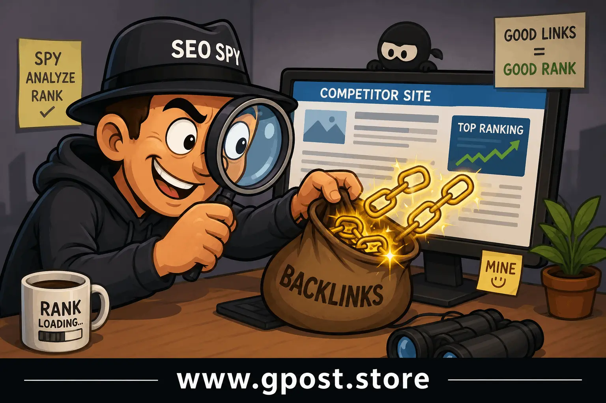

Competitor Backlink Spying Strategy – The Ultimate SEO Guide for 2026
competitor backlink spying strategy is one of the smartest SEO techniques for discovering where your competitors are getting their backlinks, authority, and rankings from. Instead of guessing which links work, you can analyze successful competitors and reverse-engineer their SEO strategy safely.
In 2026, Google values authority, trust, relevance, and high-quality backlinks more than ever before. Random backlinks no longer deliver strong results consistently. Smart marketers now focus on competitor analysis to uncover proven backlink opportunities that actually improve rankings.
Whether you run an affiliate blog, local business, SaaS company, SEO agency, or eCommerce website, learning how to spy competitor backlinks can dramatically improve your link-building strategy.
This complete guide explains everything including:
- How to spy competitors backlinks for SEO
- How to find competitors backlinks easily
- How to copy competitor backlinks safely
- Best spy SEO backlink strategy methods
- Advanced competitor backlink analysis tactics
- Safe white-hat SEO approaches for 2026

Competitor backlink analysis helps uncover proven SEO opportunities.
What is Competitor Backlink Spying Strategy?
competitor backlink spying strategy is the process of analyzing the backlink profiles of competing websites to identify where their links come from and then using those insights to build similar or better backlinks for your own website.
Instead of building random backlinks, this strategy focuses on proven websites already helping competitors rank on Google.
Quick Beginner-Friendly Explanation
Imagine your competitor ranks on page one for important keywords. Their backlinks are likely one major reason for those rankings. By studying their backlink profile, you can discover:
- Guest posting websites
- Niche edit opportunities
- Resource pages
- PR backlinks
- Industry directories
- Editorial mentions
- Forum backlinks
- Link-worthy content ideas
This saves time because you are targeting websites already proven to help rankings.
Why Competitor Backlink Analysis Matters in SEO
Backlinks continue to be one of the strongest Google ranking signals in 2026. Even with AI-generated content becoming widespread, backlinks still determine how trustworthy and authoritative your website appears.
Major Benefits of Competitor Backlink Analysis
- Discover high-authority backlink sources
- Find guest blogging opportunities faster
- Improve domain authority
- Increase organic traffic
- Build safer white-hat backlinks
- Understand competitor SEO strategies
- Reveal content that attracts links naturally
Instead of wasting money on spam links, you can focus on backlinks that already work in your niche.
Best Spy SEO Backlink Strategy for 2026
The Best spy seo backlink strategy focuses on analyzing quality backlink patterns rather than blindly copying every competitor link.
Focus on Relevance
Relevant backlinks are more powerful than random high-domain-authority links. Google prefers contextual backlinks from websites related to your niche.
Analyze Why Competitors Earn Links
Professional SEO experts study the reason behind backlinks.
- Was it a guest post?
- A niche edit?
- A resource page?
- A statistics article?
- A useful tool?
- A case study?
Understanding the purpose behind the backlink helps you replicate the strategy more effectively.
Copy Systems, Not Just Individual Links
One backlink is helpful, but understanding the entire strategy is far more valuable.
For example:
- If competitors gain backlinks through statistics content, create better statistics pages.
- If they gain links through guest blogging, improve your outreach system.
- If they earn links through tools, build more useful free tools.
How to Spy Competitors Backlinks for SEO
Learning how to spy competitors backlinks for seo is easier today because advanced SEO tools provide detailed backlink intelligence.
Step 1: Identify Your Real SEO Competitors
Your SEO competitors are not always your business competitors.
Instead, search your target keywords on Google and identify websites consistently ranking on page one.
Step 2: Use SEO Tools
Several powerful tools can help analyze backlinks:
- Ahrefs
- SEMrush
- Moz
- Majestic
- Ubersuggest
- SEO SpyGlass
These tools reveal:
- Referring domains
- Anchor text
- Link type
- Domain authority
- Traffic metrics
- Lost backlinks
- New backlinks
Step 3: Export Competitor Backlinks
Export backlink data into spreadsheets for easier organization.
Sort backlinks by:
- Authority
- Traffic
- Relevance
- Link type
- Dofollow links
Step 4: Categorize Opportunities
Organize backlinks into categories:
- Guest posts
- Niche edits
- Directories
- Editorial links
- Resource pages
- Forums
- Press mentions
This helps prioritize high-value opportunities first.
How to Find Competitors Backlinks Easily
Many beginners struggle with how to find competitors backlinks easily, but the process becomes simple with the right approach.
Google Search Operators
Google search operators can uncover backlink opportunities manually.
- "write for us" + your niche
- "guest post" + your niche
- "resources" + keyword
- "recommended tools" + keyword
- site:.edu keyword
Reverse Engineer Guest Posts
If competitors publish guest posts, you can often identify them by checking author bios and outbound links.
Track Mentioned Brands
Brand mentions frequently reveal PR opportunities and editorial backlinks.
Analyze Broken Backlinks
Sometimes competitors lose backlinks because pages become outdated or deleted. You can replace those dead pages with your own relevant content.
Types of Competitor Backlinks
Guest Blogging Backlinks
Guest blogging remains one of the safest white-hat SEO strategies.
Benefits include:
- Brand exposure
- Authority building
- Referral traffic
- Contextual backlinks
Niche Edit Backlinks
Niche edits are backlinks inserted into existing content on indexed pages.
These links can deliver strong SEO value because the page already has authority.
Learn the difference between strategies here: Guest Posting vs Niche Edits
Editorial Links
Editorial backlinks occur naturally when websites reference valuable content.
These are among the strongest backlinks in SEO.
Resource Page Links
Many websites maintain resource pages listing useful tools and guides.
You can pitch your content as a helpful resource.
Forum and Community Links
While weaker individually, niche forum backlinks can still drive targeted traffic and diversify your backlink profile.
How to Copy Competitor Backlinks Safely
Understanding how to copy competitor backlinks safely is extremely important because copying low-quality links can harm rankings.
Focus on White-Hat Links
Only replicate backlinks from trustworthy, relevant websites.
Avoid:
- Spam directories
- PBN networks
- Automated backlinks
- Irrelevant foreign sites
- Casino or adult backlinks
Check Traffic Quality
Before building backlinks, analyze whether the website receives genuine organic traffic.
Trafficless websites often provide little SEO value.
Maintain Natural Anchor Text
Over-optimized anchor text can trigger Google penalties.
Use a healthy mix of:
- Branded anchors
- Generic anchors
- Naked URLs
- Partial match keywords
Build Links Gradually
Natural link growth looks safer than sudden spikes.
Consistency matters more than speed.
Step-by-Step Competitor Backlink Spying Strategy
Step 1: Competitor Research
Start by identifying websites ranking for your target keywords.
Create a spreadsheet with:
- Competitor URL
- Domain authority
- Total backlinks
- Referring domains
- Top-performing pages
Step 2: Analyze Their Best Links
Focus on backlinks driving real authority.
Questions to ask:
- Which pages attract most links?
- Which anchor texts appear often?
- Which content types perform best?
Step 3: Create Better Content
Your content should improve upon competitor pages.
Ways to improve:
- More updated information
- Better design
- Deeper explanations
- Original data
- Better user experience
Step 4: Outreach Campaigns
Email websites linking to competitors and explain why your content offers additional value.
Improve your outreach strategy here: How to Pitch Bloggers Effectively
Keep outreach:
- Short
- Personalized
- Professional
- Helpful
Step 5: Monitor Results
Track:
- New backlinks
- Keyword rankings
- Organic traffic
- Referral traffic
- Indexing speed
Common Mistakes in Competitor Backlink Analysis
Copying Every Backlink
Not all competitor backlinks are valuable.
Some links may be toxic or irrelevant.
Ignoring Relevance
Backlinks from unrelated niches rarely help long term.
Using Exact Match Anchors Excessively
Over-optimized anchors can appear manipulative.
Prioritizing Quantity Over Quality
Ten relevant backlinks are often more valuable than hundreds of spam links.
Ignoring Content Quality
Even strong backlinks cannot permanently save weak content.
Advanced Competitor Backlink Tactics
Skyscraper Technique
Find highly linked competitor content and create a better version.
Then contact websites linking to the original page.
Broken Link Building
Identify broken competitor pages with backlinks and offer your own content as a replacement.
Read full guide: Broken Link Building Strategy
Link Intersect Analysis
Use SEO tools to discover websites linking to multiple competitors but not linking to you.
These are high-priority opportunities.
Digital PR
Create statistics, case studies, or unique research that naturally attracts backlinks.
Role of Guest Blogging in Competitor Backlink Strategy
Guest blogging remains a powerful method for replicating competitor backlinks safely.
Benefits include:
- Contextual backlinks
- Brand authority
- Networking opportunities
- Targeted referral traffic
Focus on quality websites within your niche rather than mass guest posting.
Importance of Domain Authority and Relevance
High-authority websites pass stronger SEO signals.
However, relevance matters just as much.
A relevant DA 30 backlink may outperform an irrelevant DA 80 backlink.
Ideal Backlink Characteristics
- Relevant niche
- Real traffic
- Indexed pages
- Natural placement
- Dofollow attribute
- Strong user engagement
Anchor Text Strategy for Safe SEO
Anchor text optimization is critical for safe link building.
Recommended Anchor Mix
- 50% branded anchors
- 20% naked URLs
- 20% generic anchors
- 10% partial-match keywords
Avoid aggressive exact-match anchor campaigns.
Is Competitor Backlink Spying Still Worth It in 2026?
Yes, absolutely.
In fact, competitor backlink analysis is more valuable than ever because SEO competition continues increasing.
Modern SEO success depends heavily on:
- Authority
- Trust
- Topical relevance
- Quality backlinks
Competitor analysis removes guesswork and reveals proven opportunities.
When Should You Avoid Copying Competitor Backlinks?
You should avoid copying backlinks when:
- The website is spammy
- The niche is irrelevant
- The site has no traffic
- The backlink appears paid and manipulative
- The website is deindexed
- The backlink comes from toxic PBNs
Always prioritize long-term SEO safety over short-term ranking tricks.
FAQs
What is competitor backlink spying strategy in SEO?
Competitor backlink spying strategy means analyzing competitor backlinks to discover link-building opportunities, authority websites, and SEO methods that improve rankings, traffic, and domain authority naturally.
How does competitor backlink analysis help improve Google rankings?
Competitor backlink analysis helps identify trusted referring domains, backlink patterns, and outreach opportunities that can strengthen SEO authority and improve keyword rankings faster.
What are the biggest mistakes in competitor backlink spying?
Common mistakes include copying spam backlinks, ignoring niche relevance, overusing exact-match anchor text, and focusing only on domain authority instead of link quality.
Competitor backlink spying vs manual link building: which is better?
Competitor backlink spying quickly finds proven backlink sources, while manual link building offers greater control. Combining both strategies creates a stronger long-term SEO backlink profile.
How can beginners start competitor backlink spying effectively?
Beginners should analyze top-ranking competitors, study referring domains, review anchor texts, and target similar backlink opportunities through outreach and guest posting campaigns.
Which SEO strategy works best with competitor backlink research?
Guest posting, niche edits, contextual backlinks, and digital PR work best with competitor backlink research for building authority and improving search engine visibility.
Can competitor backlink spying help pages index faster?
Yes, quality backlinks from authoritative indexed websites can improve crawl frequency, indexing speed, and overall search visibility for important website pages.
What tools are best for competitor backlink spying strategy?
Popular SEO tools for competitor backlink spying include Ahrefs, SEMrush, Moz, and Ubersuggest because they provide backlink tracking and competitor analysis features.
How does competitor backlink spying increase website authority?
Competitor backlink spying helps websites gain relevant backlinks, increase trust signals, improve referral traffic, and strengthen domain authority through strategic link acquisition.
Will competitor backlink spying strategy still work after future Google updates?
Yes, competitor backlink spying will remain effective because Google continues rewarding relevant, high-quality, and naturally earned backlinks over manipulative SEO tactics.
Conclusion
competitor backlink spying strategy is one of the smartest and safest ways to improve SEO rankings in 2026. Instead of building random backlinks blindly, you can analyze successful competitors, identify proven opportunities, and replicate high-quality backlinks strategically.
The key is focusing on relevance, authority, trust, and long-term SEO safety. Avoid spam links, prioritize helpful content, and use competitor insights to guide smarter decisions.
Whether you are building backlinks through guest blogging, niche edits, editorial mentions, or resource pages, competitor backlink analysis can dramatically reduce guesswork and accelerate your SEO growth.
If you want to improve your SEO outreach and backlink strategy further, explore our professional guest posting services for safer and more effective link-building campaigns.